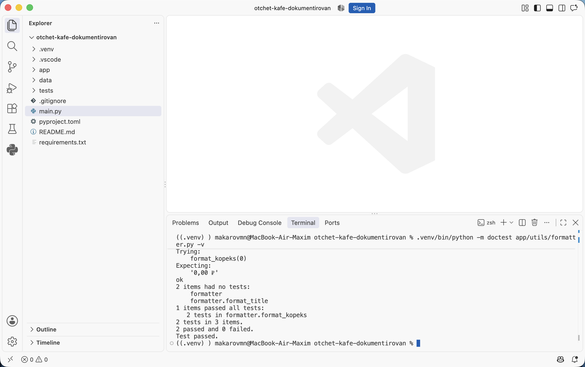

Докстринги и документация кода · МДК.01.01 · разработка программных модулей
Глава 4.3
Четыре формата
на одной функции
В этой главе одна и та же функция записана четырьмя способами: по PEP 257, в reStructuredText, в стиле Google и в стиле NumPy. Разобрано, чем форматы различаются, какие разделы в них есть, что из них понимает сборщик документации и почему в проекте выбирают один формат на всех.
- Категория
- Форматы записи
- Уровень
- Начальный
- Опирается на
- Главы 4.1 и 4.2
- Зачем это знать
- Читать чужие докстринги и писать в формате проекта
§1Зачем нужны форматы
PEP 257 задаёт общие правила записи: тройные кавычки, краткая первая строка, пустая строка после неё. Как перечислять параметры и что писать про возвращаемое значение, он не определяет. Из-за этого сложились несколько соглашений с готовой разметкой разделов; их называют форматами докстрингов.
Формат нужен по двум причинам. Первая: читателю не приходится каждый раз разбираться в устройстве текста — раздел с параметрами стоит там же, где в остальных функциях проекта. Вторая: сборщик документации по этой разметке строит таблицы параметров на странице. Текст в свободной форме он покажет как абзац.
Четыре формата встречаются постоянно, и различаются они только записью разделов:
| Формат | Откуда взялся | Как выглядит параметр |
|---|---|---|
| PEP 257 | Стандарт Python, разделов не задаёт | Обычным текстом в абзаце |
| reStructuredText (reST) | Разметка документации Python и Sphinx | :param path: описание |
| Соглашение проектов Google | Раздел Args:, внутри path: описание | |
| NumPy | Библиотеки NumPy и SciPy | Раздел Parameters с чертой, внутри path : Path |
§2Функция для сравнения
Все четыре записи сделаны для одной функции из проекта кафе. Она берёт список заказов, считает выручку по каждому официанту и возвращает словарь. Пустой список для неё недопустим.
def revenue_by_waiter(orders: list[Order], top: int = 0) -> dict[str, int]: if not orders: raise ValueError("Список заказов пуст") totals: dict[str, int] = {} for order in orders: totals[order.waiter] = totals.get(order.waiter, 0) + order.kopeks ranked = sorted(totals.items(), key=lambda pair: -pair[1]) if top: ranked = ranked[:top] return dict(ranked)
Из подписи видно, что на входе список заказов и целое число, на выходе словарь со строковыми ключами. Четырёх вещей в подписи нет: значения словаря — копейки; ключи идут в порядке убывания выручки; top со значением 0 означает «все официанты»; пустой список приводит к ValueError. Эти четыре вещи и записывают в докстринг.
§3Формат 1. PEP 257 без разделов
Запись без разделов: краткая строка, пустая строка и абзац подробностей. Требованиям стандарта это отвечает.
"""Считает выручку по каждому официанту.
Суммы возвращаются в копейках, официанты идут в порядке убывания
выручки. Значение top = 0 означает, что возвращаются все официанты,
иначе остаются только первые top. Пустой список заказов приводит
к ValueError.
"""
| Сильная сторона | Ограничение |
|---|---|
| Пишется быстро, читается как обычный текст | Параметры перечислены в абзаце: при четырёх аргументах текст становится сплошным |
| Никаких дополнительных правил запоминать не нужно | Сборщик документации не построит таблицу параметров, покажет абзац |
Такая запись применяется для коротких функций и служебных модулей. Для функции с несколькими параметрами и исключениями берут формат с разделами.
§4Формат 2. reStructuredText
reStructuredText — язык разметки, на котором написана документация самого Python. В докстринге от него используются поля: строка начинается с двоеточия, затем имя поля, затем двоеточие и текст.
"""Считает выручку по каждому официанту.
:param orders: Заказы за смену, список не должен быть пустым.
:type orders: list[Order]
:param top: Сколько официантов оставить; 0 — оставить всех.
:type top: int
:return: Выручка в копейках по официантам, по убыванию суммы.
:rtype: dict[str, int]
:raises ValueError: Если список заказов пуст.
"""
Поля :type: и :rtype: нужны, когда у функции нет аннотаций типов. При аннотированной подписи их опускают: иначе один и тот же тип записан в двух местах и после правки расходится.
| Сильная сторона | Ограничение |
|---|---|
| Понимается сборщиком без дополнительных настроек | Каждая строка начинается со служебных символов, читать в редакторе тяжелее |
| Внутри полей доступна вся разметка reStructuredText: ссылки, списки, вставки кода | Разметку нужно знать: у неё свои правила про отступы и переносы |
§5Формат 3. Google
Формат Google размечает разделы обычными словами с двоеточием, а содержимое — отступом. Служебных символов в тексте нет.
"""Считает выручку по каждому официанту.
Args:
orders: Заказы за смену, список не должен быть пустым.
top: Сколько официантов оставить в результате. Значение 0
означает, что возвращаются все.
Returns:
Выручка в копейках по именам официантов, в порядке убывания
суммы.
Raises:
ValueError: Если список заказов пуст.
"""
Длинное описание параметра переносится на следующую строку с дополнительным отступом — так видно, что это продолжение того же пункта.
| Сильная сторона | Ограничение |
|---|---|
| Читается в редакторе как обычный текст, разделы видны сразу | Сборщику документации нужно расширение, которое понимает эту разметку |
| Занимает меньше строк, чем NumPy, при том же составе разделов | Отступы значимы: сбитый отступ превращает раздел в абзац |
Разделы Args: и Parameters сборщик Sphinx понимает через расширение sphinx.ext.napoleon: оно переводит форматы Google и NumPy в поля reStructuredText перед сборкой. Подключается строкой в настройках сборки, и это единственное, что требуется для этих двух форматов. Подробно — в теме про Sphinx.
§6Формат 4. NumPy
Формат NumPy размечает разделы заголовком с чертой из дефисов под ним. Имя параметра и его тип пишутся через двоеточие, описание — на следующей строке с отступом.
"""Считает выручку по каждому официанту.
Parameters
----------
orders : list[Order]
Заказы за смену, список не должен быть пустым.
top : int, optional
Сколько официантов оставить в результате, по умолчанию 0 —
возвращаются все.
Returns
-------
dict[str, int]
Выручка в копейках по именам официантов, по убыванию суммы.
Raises
------
ValueError
Если список заказов пуст.
"""
| Сильная сторона | Ограничение |
|---|---|
| Подробно: тип, признак необязательности и описание разнесены | Занимает много строк, у короткой функции описание длиннее тела |
| Принят в научных библиотеках, привычен их пользователям | Черта под заголовком должна совпадать по длине со словом, это легко нарушить |
§7Сравнение четырёх форматов
| Признак | PEP 257 | reST | NumPy | |
|---|---|---|---|---|
| Разделы для параметров | нет | :param: | Args: | Parameters + черта |
| Строк на разобранную функцию | 7 | 10 | 12 | 18 |
| Служебные символы в тексте | нет | много | нет | нет |
| Нужно расширение для сборки | нет | нет | napoleon | napoleon |
| Таблица параметров на странице | нет | да | да | да |
| Где встречается чаще | короткие служебные функции | старые проекты и документация Python | прикладные проекты и веб-сервисы | NumPy, SciPy, pandas |
Формат выбирают один на весь проект и записывают это решение в README или в настройках проверки. Смешивать форматы в одном репозитории — то же, что смешивать отступы в четыре и восемь пробелов: работать будет, а читать придётся с переключением.
§8Разделы и когда они нужны
Названия разделов даны в записи формата Google; в остальных форматах они называются похоже.
| Раздел | Что в нём | Когда нужен |
|---|---|---|
Args: | Параметры: ограничения, единицы измерения, смысл значений по умолчанию | Когда из имени и аннотации ограничения не видны |
Returns: | Что означает возвращаемое значение, в каком порядке, в каких единицах | Когда функция возвращает значение |
Yields: | Что выдаёт генератор на каждом шаге | Вместо Returns: в функциях с yield |
Raises: | Класс исключения и условие, при котором оно возбуждается | Когда функция возбуждает исключение сама |
Attributes: | Атрибуты объекта и их смысл | В докстринге класса |
Examples: | Вызов функции и результат | Когда порядок аргументов или формат результата неочевиден |
Note: | Побочные действия: запись файла, изменение аргумента на месте, обращение к сети | Когда функция делает что-то помимо вычисления результата |
Раздел, в котором нечего написать, пропускают. Пустой Returns: у функции, возвращающей None, занимает две строки и не сообщает ничего.
§9Примеры, которые проверяются запуском
Раздел с примерами оформляют так, как выглядит работа в интерактивном режиме Python: строка ввода начинается с трёх угловых скобок, под ней — ожидаемый вывод. У такой записи есть дополнительное свойство: встроенный модуль doctest находит эти примеры, выполняет их и сравнивает результат с тем, что написано.
def format_kopeks(kopeks: int) -> str: """Переводит сумму в копейках в строку с рублями. Examples: >>> format_kopeks(125000) '1 250,00 ₽' >>> format_kopeks(0) '0,00 ₽' """

doctest нашёл в докстринге format_kopeks два вызова, выполнил их и сравнил вывод с тем, что записано под ними. Строка 2 passed означает, что примеры совпали с поведением функции.Расхождение примера с поведением функции эта команда показывает как несовпадение строк: ожидалось одно, получено другое. Так описание перестаёт устаревать молча — устаревший пример становится падающей проверкой. Запускать doctest можно вместе с тестами: pytest --doctest-modules.
Примеры сравниваются построчно как текст. Вызов, результат которого меняется от запуска к запуску — текущее время, случайное число, путь к файлу на конкретном компьютере, — в таком виде проверить нельзя. Для примеров берут вызовы с постоянным результатом; остальное проверяют обычными тестами.
§10Формат этого курса
В проектах дисциплины принят формат Google. Основания такие:
- Разделы читаются в редакторе без разметки: студент видит тот же текст, что попадёт на страницу документации.
- Типы остаются в подписи функции, в докстринге их дублировать не требуется.
- Формат поддерживается генератором докстрингов в VS Code из главы 4.5 и проверкой из той же главы.
- Он применяется в прикладных проектах и веб-сервисах, а курс заканчивается сервисом на FastAPI.
Формат NumPy встретится при чтении документации научных библиотек, reStructuredText — в старых проектах и в исходниках стандартной библиотеки. Их достаточно узнавать и понимать.
§11Проверьте себя
Зачем нужны форматы, если PEP 257 разделов не требует?
Формат даёт одинаковое место для одинаковых сведений: читатель находит раздел о параметрах там же, где в остальных функциях проекта. Второе основание — сборщик документации: по размеченным разделам он строит таблицу параметров, а текст без разметки показывает абзацем.
В функции есть аннотации типов. Нужны ли поля :type: в формате reStructuredText?
Нет. Тип уже записан в подписи, и второе его упоминание после правки функции расходится с первым. Поля :type: и :rtype: применяют в коде без аннотаций.
Чем разделы Google отличаются от разделов NumPy по записи?
В Google раздел открывается словом с двоеточием (Args:), содержимое идёт с отступом, тип не повторяется. В NumPy раздел открывается заголовком (Parameters) с чертой из дефисов под ним, имя параметра и тип записываются в одну строку через двоеточие, описание — ниже с отступом. Запись NumPy занимает больше строк.
Что требуется для сборки документации из докстрингов в формате Google?
Расширение sphinx.ext.napoleon: оно переводит разделы Google и NumPy в поля reStructuredText перед сборкой. Формат reStructuredText сборщик понимает без расширений.
Какой раздел ставят у функции-генератора и почему?
Yields: вместо Returns:. Генератор выдаёт значения по одному при каждом шаге перебора, и описывается то, что приходит на каждом шаге.
Чем пример в разделе Examples: отличается от обычного описания?
Он записан как строки интерактивного режима и поэтому проверяем запуском: python -m doctest выполняет вызовы и сравнивает вывод с написанным. Расхождение примера с поведением функции становится падающей проверкой.
§12Шпаргалка по главе
краткая строка + абзац
разделов нет
:param x: описание
:return: описание
:raises ValueError: когда
Args:
Returns:
Raises:
Parameters
----------
x : int
Yields: у генератора
Attributes: у класса
Examples: с >>>
python -m doctest файл.py -v
pytest --doctest-modules
Итог главы
PEP 257 задаёт общие правила записи, а разметку разделов задают форматы. Запись по PEP 257 состоит из краткой строки и абзаца и годится для коротких функций. reStructuredText размечает сведения полями с двоеточиями и понимается сборщиком без настроек. Формат Google размечает разделы словами Args, Returns, Raises и читается в редакторе как обычный текст. Формат NumPy подробнее остальных: заголовок раздела с чертой, тип рядом с именем параметра, описание ниже. Google и NumPy собираются в документацию через расширение napoleon. Раздел с примерами, записанный строками интерактивного режима, проверяется запуском doctest. В дисциплине принят формат Google, один на все проекты. В следующей главе он применён к двенадцати небольшим функциям разного вида.
- Общие правила записи — PEP 257, Docstring Conventions.
- Разделы форматов Google и NumPy и их поддержка при сборке — документация расширения sphinx.ext.napoleon.
- Поля reStructuredText для описания функций — документация Sphinx, списки информационных полей.
- Проверка примеров из докстрингов — документация модуля doctest.